Tu compañero para gestionar viajes, clientes, finanzas y el mantenimiento de tu auto.
Versión 2.0 · Octubre 2026 Aplicación realizada por Unitec Applications
5 Viajes — calendario, clientes, contactos y frecuentes
6 Registrar el cobro de un viaje
7 Tarifas — la calculadora de viajes
8 Auto — mantenimiento, gastos y combustible
9 Reportes — tus finanzas mes a mes
10 Configuración — identidad, tarifas y datos de prueba
11 Tu página web de reservas
12 Tu licencia: vencimiento, avisos y renovación
13 Preguntas frecuentes y buenas prácticas
💡 Cómo leer este manual
Cada sección muestra una captura de la app junto a la explicación de cada elemento.
Los recuadros de color destacan consejos (azul), advertencias (ámbar)
y datos clave (verde).
1 · ¿Qué es Senda?
Senda es una aplicación para choferes independientes.
Te ayuda a organizar tu día a día y, sobre todo, a entender cuánto ganás de verdad.
Con la app podés:
📅 Agendar y seguir tus viajes y clientes.
👥 Elegir al cliente desde tus contactos o tus clientes frecuentes, sin escribir.
🧮 Calcular el precio de cada viaje según los kilómetros.
⛽ Registrar combustible y conocer el rendimiento de tu auto.
🔧 Controlar el mantenimiento (aceite, frenos) y vencimientos (VTV, registro, seguro).
💰 Ver tus gastos fijos del mes (seguro, patente, cochera, celular).
📊 Consultar reportes con tu ganancia real, mes a mes.
🌐 Compartir una web de reservas para que tus pasajeros vean tu disponibilidad.
La idea central
Muchas apps muestran solo “cuánto cobraste”. Senda va más allá:
resta el combustible, el mantenimiento y un fondo de reserva para el auto, para que veas tu
ganancia real y no te sorprenda cuando haya que cambiar neumáticos.
2 · Cómo se activa: tu número y tu licencia
Senda se usa con una licencia. Quien te da la app te da de alta con tu
número de WhatsApp, y con ese número la activás en tu celular.
Cómo funciona
Alta
Te da de alta Unitec Applications con tu nombre y tu número de WhatsApp.
Activación
Abrís la app, escribís tu número, aceptás el aviso de privacidad y tocás Activar. Necesitás internet.
Prueba gratuita
Arrancás con 30 días de prueba, contados desde la primera activación.
Tus datos
Se guardan en una cuenta en la nube asociada a tu número: no los perdés si cambiás de teléfono.
Un número, un equipo
Tu licencia queda atada a tu celular. Si cambiás de teléfono, escribinos y lo aprobamos.
Web de reservas
Incluida, con tu enlace personal (sección 11).
✅ Tus datos son tuyos
Tu número, tus viajes y los datos de tus pasajeros no se comparten con terceros. Podés
pedir que los corrijan o los borren escribiéndonos por WhatsApp.
El “fondo de reserva para el auto”
Es el corazón financiero de la app. Cada kilómetro que recorrés desgasta tu auto (neumáticos,
frenos, aceite). La app calcula un costo de desgaste por kilómetro y lo separa como
reserva, para que esa plata NO la gastes: es del auto.
💡 Ejemplo
Si tu tarifa es $ 120/km y el desgaste $ 20/km, en un viaje de 30 km
cobrás $ 3.600, separás $ 600 para el auto y tu ganancia real es $ 3.000.
3 · Primeros pasos al abrir la app
Al abrir la app por primera vez la activás con tu número. Es un paso único.
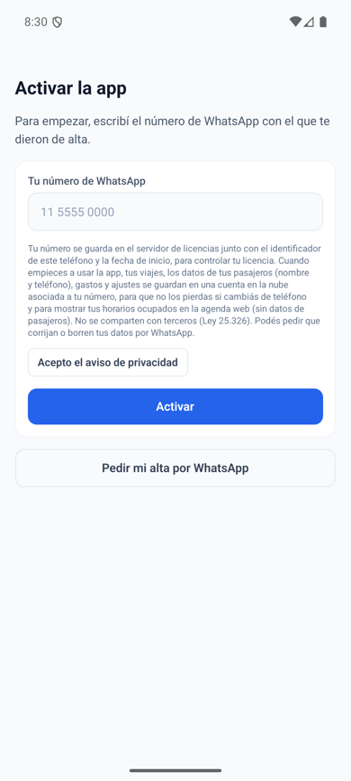
1 · Activar con tu número
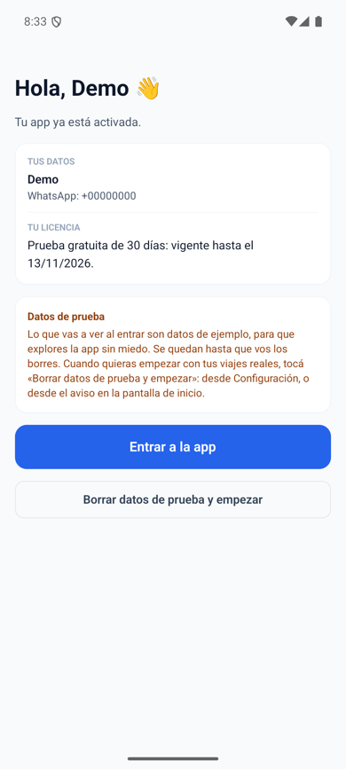
2 · Bienvenida y licencia
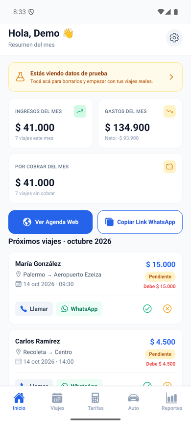
3 · Inicio
Escribí tu número de WhatsApp (el mismo con el que te dieron de alta), tocá
“Acepto el aviso de privacidad” y luego Activar.
Te saluda la pantalla de bienvenida: confirma tus datos y dice hasta cuándo
vale tu licencia. Tocá “Entrar a la app”.
Vas a ver viajes de ejemplo para que explores cómo funciona.
Recorré las 5 secciones de abajo: Inicio, Viajes, Tarifas, Auto y Reportes.
Cuando quieras, andá a Configuración (el ícono ⚙️ arriba a la derecha) para
ajustar tus tarifas.
Si tu número todavía no está dado de alta, la app te lo avisa y podés tocar
“Pedir mi alta por WhatsApp”.
⚠️ Datos de ejemplo
Los viajes que ves al inicio (María, Carlos, Lucía…) son de demostración y se quedan
hasta que vos los borres. Cuando quieras empezar con tus viajes reales, tocá
“Borrar datos de prueba y empezar”: está en Configuración, en el aviso amarillo de
Inicio y en la pantalla de bienvenida. Lo que cargues vos se conserva.
La barra de navegación (abajo)
Es tu menú principal, como se ve en la tercera captura. Siempre visible, con 5 accesos:
Inicio · Viajes · Tarifas · Auto · Reportes.
4 · Inicio — tu resumen del mes
Es la pantalla que ves al entrar. Te da una foto rápida de tu mes.
Arriba: tus dos números del mes
Ingresos del mes (verde): todo lo que cobraste y cuántos viajes hiciste.
Gastos del mes (ámbar): combustible, mantenimiento y gastos fijos, con el neto debajo.
En el medio: tu agenda web
Ver Agenda Web: abre tu página pública de reservas.
Copiar Link WhatsApp: copia el enlace para enviarlo a tus pasajeros.
Abajo: próximos viajes
Tus siguientes viajes con cliente, origen → destino, fecha y hora, y botones para
Llamar o escribir por WhatsApp.
Pantalla de Inicio
💡 Tip
Si deslizás hacia abajo la pantalla, los datos se actualizan.
5 · Viajes — calendario, clientes, contactos y frecuentes
Tu centro de operaciones para agendar y hacer seguimiento de cada viaje.
El calendario
Muestra el mes. Los días con viajes tienen un punto. Tocá un día para ver
solo sus viajes; volvé a tocar para quitar el filtro.
Los filtros
Botones para ver Todos, Pendientes, Completados o Cancelados.
La lista de viajes
Cada tarjeta muestra cliente, origen → destino, fecha, hora, precio y estado. Desde cada
viaje podés marcarlo como completado, cancelarlo, editarlo
(tocándolo) o eliminarlo.
Crear un viaje
El botón “+” (arriba a la derecha) abre el formulario: cliente, teléfono,
origen, destino, fecha, hora, kilómetros y precio.
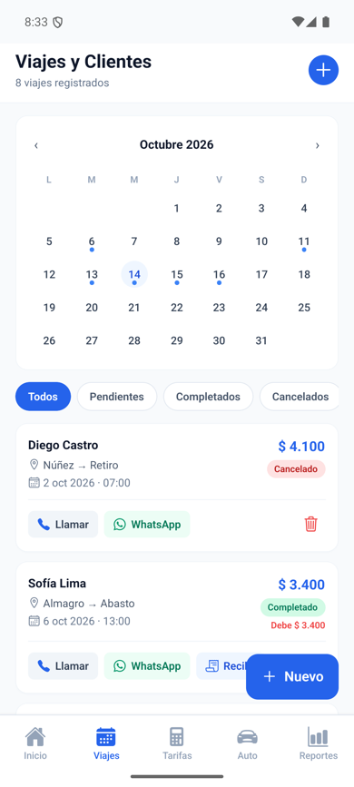
Viajes y Clientes
💡 Tip
Guardá el teléfono del cliente para que aparezcan los botones de Llamar y WhatsApp
y contactarlo con un toque.
Elegir al cliente sin escribir
Al crear un viaje, arriba del formulario hay dos botones que completan el
nombre y el teléfono por vos.
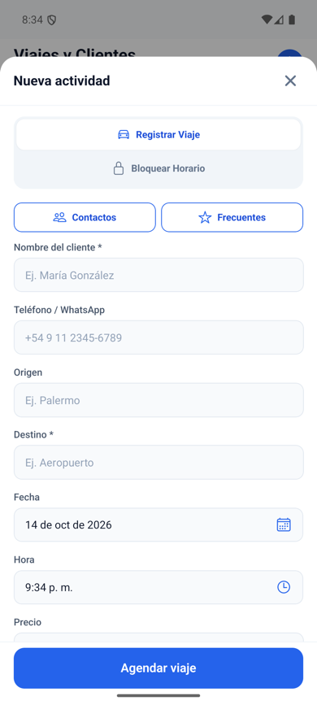
Los botones Contactos y Frecuentes
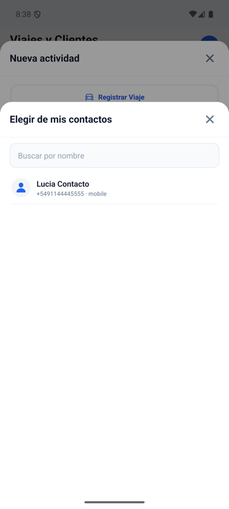
Contactos
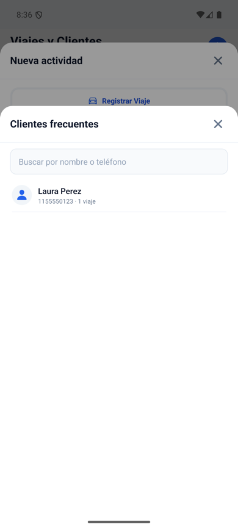
Frecuentes
👥 Contactos
Abre la agenda de tu teléfono, con buscador por nombre.
La primera vez, Android te pide permiso para leer tus contactos. Si lo aceptás,
aparecen solo los que tienen teléfono.
Senda solo guarda el contacto que elegís; no copia el resto de tu agenda.
El teléfono queda listo para WhatsApp (con el código de país). Podés corregirlo en el formulario.
⭐ Frecuentes
Son tus clientes con más viajes; a igualdad, los más recientes.
Se arman solos con los viajes que vas cargando: no hay nada que configurar.
Tiene buscador por nombre o teléfono.
Los viajes de ejemplo no cuentan: al principio la lista aparece vacía.
💡 Tip
Si no querés dar permiso a tus contactos, igual podés escribir el nombre a mano o usar
Frecuentes, que no necesita ningún permiso.
Estos botones aparecen al crear un viaje, no al editarlo.
6 · Registrar el cobro de un viaje
La función que te permite saber, viaje por viaje, si ya te pagaron. No es lo mismo
que el estado del viaje (pendiente, completado o cancelado): un viaje puede estar
completado y seguir impago, y la app te lo va a marcar.
Cuándo aparece la pantalla de cobro
Cuando creás un viaje con el botón “+” y tocás “Agendar viaje”,
la app abre una pantalla completa llamada “Registrar cobro”.
Si solo querías anotar un bloqueo en la agenda, se guarda directo: los bloqueos no tienen cobro.
Qué muestra la pantalla
Arriba: el resumen del viaje
Destino, cliente, fecha y hora, y el total del viaje bien grande. Sirve para
confirmar de un vistazo que estás cobrando el viaje correcto.
En el medio: “¿Cómo se cobró este viaje?”
Tres tarjetas grandes para elegir una:
🟠 Pendiente — todavía no cobraste nada.
🟢 Cobrado — se pagó el monto total.
🔵 Parcial — se pagó solo una parte.
Abajo: el botón para confirmar
“Confirmar y guardar viaje” guarda el viaje junto con el estado de cobro
que elegiste.
Si elegís Parcial, aparece un campo para escribir el monto ya
cobrado y debajo, en rojo, el “Falta cobrar”: la diferencia entre el total
del viaje y lo que te entregaron. Se actualiza mientras escribís.
✅ Control automático
Si escribís un monto mayor al total del viaje, la app te avisa
(“El monto supera el total del viaje”) y no te deja guardar hasta que lo corrijas.
Cómo se ve en la lista de viajes
Cada tarjeta de viaje muestra su estado de cobro, y cuando todavía te deben plata
lo dice en rojo:
“Debe $8.000” — viaje pendiente de cobro por ese saldo.
“Parcial · debe $5.000” — ya te pagaron una parte y queda esa diferencia.
Si está cobrado por completo, no aparece ningún aviso en rojo.
Cambiar el cobro de un viaje que ya existe
Tocá el viaje para editarlo y volvé a tocar “Agendar viaje”: la pantalla de cobro
se abre con lo que habías registrado antes, así solo cambiás lo que haga falta.
💡 Tip
Acostumbráte a marcar el cobro apenas te paguen. Así, cuando quieras saber
cuánto te deben en total, lo ves de un vistazo en la lista de viajes.
7 · Tarifas — la calculadora de viajes
Para saber cuánto cobrar antes de aceptar un viaje.
Tus tarifas actuales
Arriba ves tu tarifa por kilómetro vigente. Con “Editar tarifas” vas a
Configuración para cambiarla.
Calcular viaje
Escribí los kilómetros del recorrido (o usá los botones de distancia rápida: 10, 25, 50, 100 km).
La app muestra el precio estimado en grande.
Debajo, el fondo de reserva para el auto y tu ganancia neta estimada.
La ganancia aparece en verde si es
positiva o en rojo si los gastos la superan.
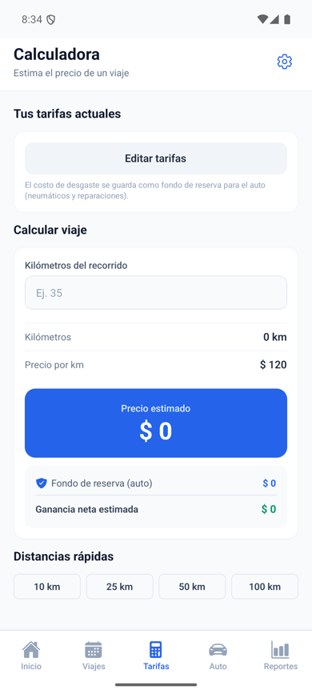
Calculadora de tarifas
✅ Recuerda
El precio estimado es lo que cobrás. La ganancia neta es lo que
realmente te queda después de separar el desgaste del auto.
8 · Auto — mantenimiento, gastos y combustible
El “gabinete” de tu vehículo. Acá cuidás el auto y registrás sus costos.
🔧 Mantenimiento
Barras de progreso para el aceite y los frenos, según tu
odómetro y los intervalos de servicio. Te avisan cuándo toca el próximo cambio.
📅 Vencimientos
Controlá la VTV/RTO, el registro y el seguro.
La app te avisa cuando están por vencer.
💰 Gastos fijos
Tus gastos mensuales fijos: seguro, patente, cochera, celular. Podés
activarlos o desactivarlos, y editarlos.
⛽ Combustible
Registrá cada carga (litros, costo, odómetro) y la app calcula tu rendimiento
aproximado (km por litro).
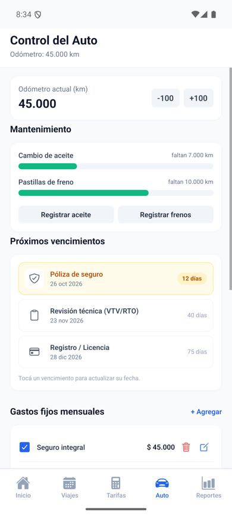
Control del Auto
💡 Por qué importa
Todo lo que cargues acá alimenta los Reportes. Si registrás combustible y
mantenimiento, tu ganancia real va a ser precisa.
9 · Reportes — tus finanzas mes a mes
El panel donde se resume todo tu trabajo.
Resumen global
Tus ingresos y costos fijos totales, y arriba de todo tu
ganancia neta real (en verde si es positiva, en rojo si no).
Balance por mes
Cada mes muestra barras comparando ingresos y gastos, con el
desglose de:
⛽ Combustible
🔧 Mantenimiento
📅 Gastos fijos
🛡️ Reserva para el auto
Y al final, la ganancia real tras la reserva: tu verdadero resultado.
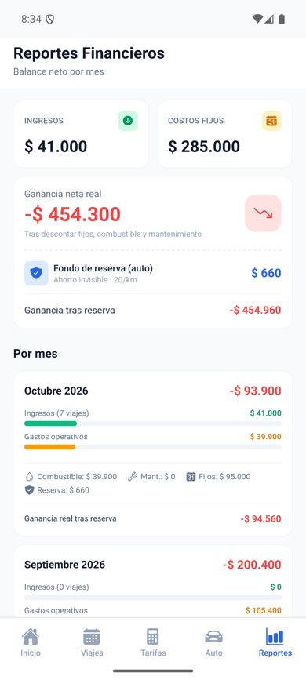
Reportes financieros
✅ Cómo leerlo
“Ganancia neta” = ingresos − gastos del mes. “Ganancia real tras reserva” = esa ganancia
menos la plata que separaste para el futuro del auto.
10 · Configuración — identidad, tarifas y datos de prueba
Se abre con el ícono ⚙️ arriba a la derecha. Tiene tres bloques y el acceso a “Acerca de”.
👤 Identidad
Tu nombre y teléfono, tal como te dieron de alta. Aparecen como
“Protegido”: no se pueden cambiar desde la app (para que tu enlace de reservas sea
estable). Si hay un error, escribinos y lo corregimos.
💵 Tarifas
Tu tarifa por kilómetro y el costo de desgaste (reserva).
Podés actualizarlos cuando quieras; no afectan tu historial.
🧪 Datos de prueba
Mientras veas viajes de ejemplo, acá aparece “Borrar datos de prueba y empezar”.
Borra solo los ejemplos: lo que cargaste vos se conserva.
ℹ️ Acerca de
Al final de la pantalla, el acceso “Acerca de” muestra la información de
la app, la versión y los créditos.
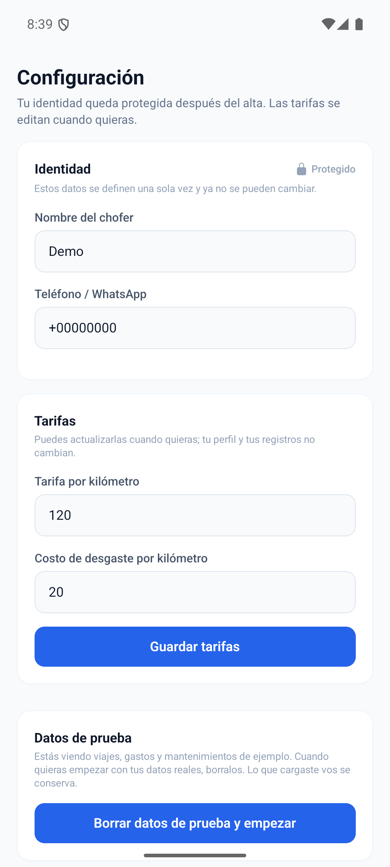
Configuración
⚠️ Identidad protegida
Tu nombre y teléfono son los datos que verán tus pasajeros en tu agenda web. Una vez
dados de alta quedan fijos.
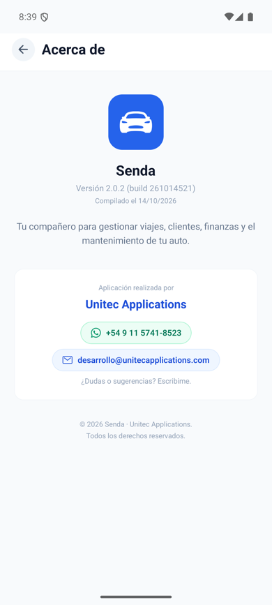
Pantalla “Acerca de” con los créditos
11 · Tu página web de reservas
Al activar la app, queda lista tu web de reservas, con un
enlace personal para compartir por WhatsApp con tus pasajeros.
¿Qué ve tu pasajero?
Tu nombre y un calendario con tus horarios.
Los turnos Libres y Ocupados,
según tu agenda real de viajes.
La agenda se actualiza sola: cuando cargás un viaje en la app, ese horario
aparece como Ocupado en la web.
¿Cómo la compartís?
En Inicio, tocá “Copiar Link WhatsApp” y pegalo en el chat
de tu pasajero. O usá “Ver Agenda Web” para abrirla vos.
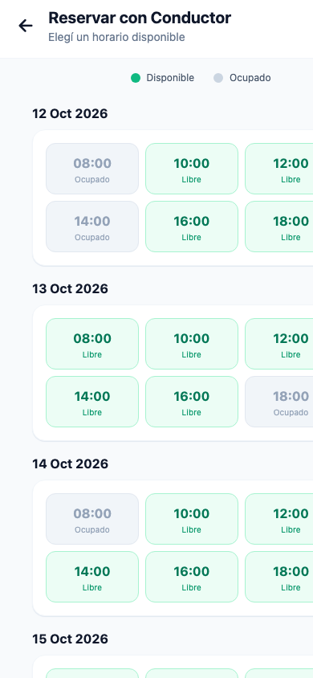
Portal de reservas
💡 Tip
Cuantos más viajes cargues en la app, más precisa será la disponibilidad que ve tu pasajero.
Reservá y cargá el viaje para que no te reserve encima.
12 · Tu licencia: vencimiento, avisos y renovación
Tu licencia dice hasta cuándo podés cargar datos. La ves en la pantalla de bienvenida
y la app te avisa antes de que venza.
Estado
Qué ves
Qué podés hacer
Vigente
Nada: usás la app normal.
Todo.
Por vencer
Una franja ámbar arriba: “Tu licencia vence en N días”.
Todo. Tocá la franja para pedir la renovación por WhatsApp.
En gracia
Una franja roja: “Te quedan N días de gracia”. También llegan avisos al celular.
Todo, pero conviene renovar ya.
Vencida
Pantalla de bloqueo con el botón “Pedir renovación por WhatsApp”.
Ya no se cargan datos nuevos, pero podés descargar todos tus datos.
Suspendida
Pantalla de acceso suspendido.
Escribir al soporte por WhatsApp. Tus datos siguen guardados.
Fecha incorrecta
“Revisá la fecha y hora del teléfono”.
Activar la fecha y hora automáticas en Ajustes y volver a abrir la app.
Versión vencida
“Esta versión de la app venció”.
Pedir la versión nueva por WhatsApp. Tu licencia se conserva al instalarla.
Cómo se renueva
Tocá la franja de aviso, o “Pedir renovación por WhatsApp” en la pantalla de bloqueo.
Se abre WhatsApp con el mensaje ya escrito, con tu número y el identificador de tu equipo.
Cuando registramos el pago, volvé a la app y tocá “Ya renové: volver a revisar”.
✅ No perdés nada
Aunque la licencia venza, tus datos no se borran. Al renovar, seguís exactamente
donde estabas. Podés bajar todo en un archivo (CSV) con “Descargar mis datos”.
⚠️ Si cambiás de teléfono
Tu licencia está atada a tu celular. En un teléfono nuevo la activación queda
esperando aprobación: escribinos por WhatsApp y la habilitamos.
💡 Sin internet
Podés usar la app unos días sin conexión. Si pasan muchos días sin conectarte, te va a
pedir que lo hagas para revisar la licencia.
13 · Preguntas frecuentes y buenas prácticas
Preguntas frecuentes
¿Necesito internet para usar la app?
Para activar la app, sí. Después podés usarla unos días sin conexión. La web de
reservas y la copia de tus datos en la nube necesitan conexión.
¿Pierdo mis datos si cierro la app?
No. Tus datos se guardan en tu cuenta en la nube, asociada a tu número, y siguen ahí aunque cierres la
app, se venza la licencia o cambies de teléfono.
¿Qué pasa si cambio de teléfono?
Instalá la app, activala con tu número y escribinos por WhatsApp: aprobamos el equipo nuevo y
recuperás tus datos.
¿La app me pide acceso a mis contactos?
Solo si tocás el botón Contactos al crear un viaje. Podés decir que no y seguir
escribiendo el nombre a mano o usando Frecuentes.
¿Puedo cambiar mi nombre después?
Una vez que guardás tu perfil, el nombre y teléfono quedan protegidos para que tu
enlace de reservas no cambie.
¿Qué es la “reserva para el auto”?
La plata que separás de cada viaje para futuras reparaciones y neumáticos. No es un gasto de hoy:
es un ahorro para el auto.
Buenas prácticas
✅ Cargá cada viaje apenas lo acordás: es la base de todo.
✅ Registrá el combustible cada vez que cargues.
✅ Marcá los mantenimientos para no olvidar aceite y frenos.
✅ Revisá los Reportes al cierre de cada mes.
✅ Separá la reserva: es la forma de que el auto no te coma las ganancias.